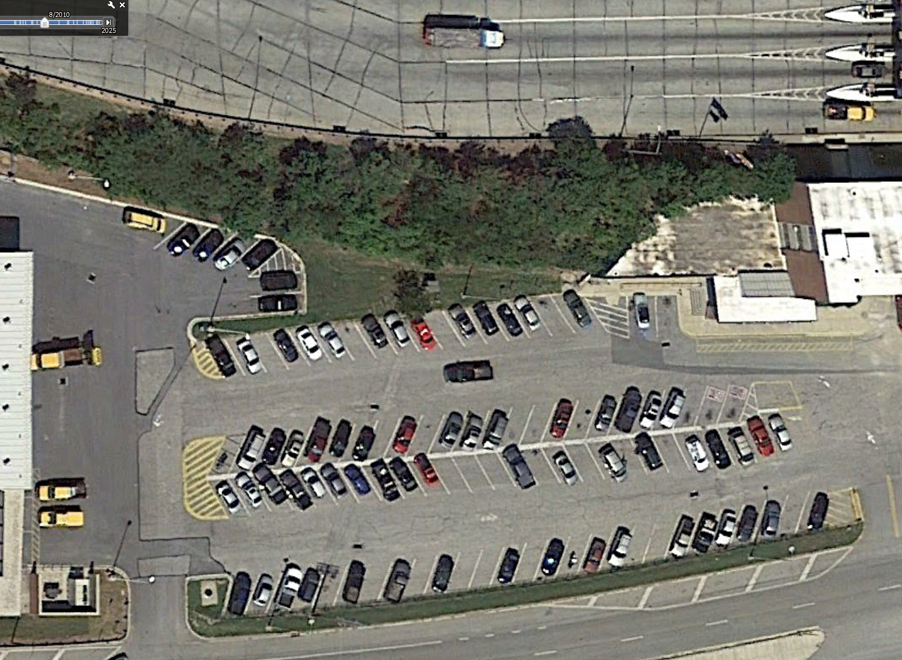
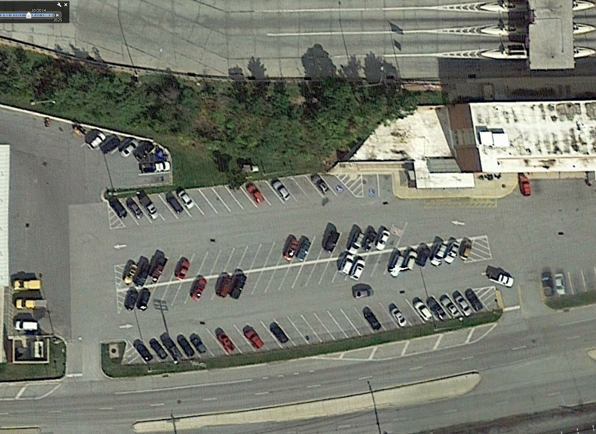
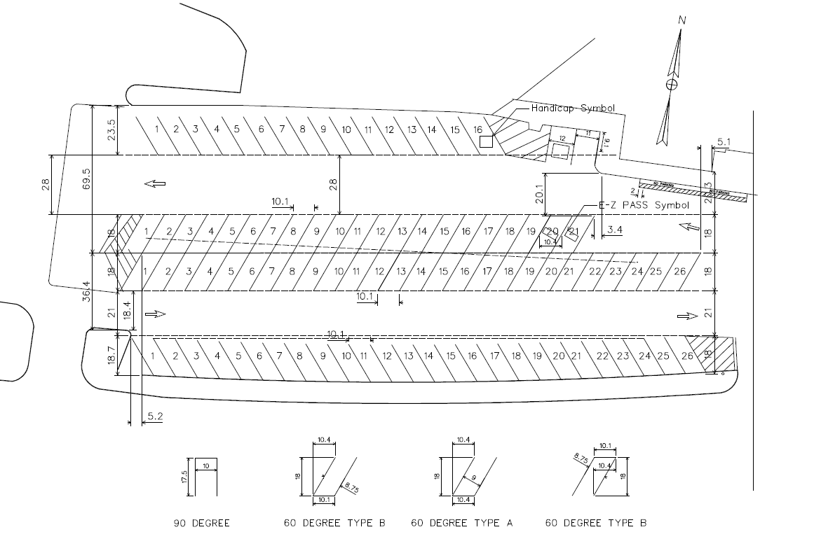

Parking Lot Design from 2010
In my last blog post, I mentioned that I have limited experience with parking space design. That’s mostly true. Over the course of my career, I’ve only completed one parking lot marking design. It happened when I just started working as a traffic engineer.
Back in 2010 (about 16 years ago), my boss asked me to design a parking lot in just 2 or 3 days. The situation was a bit unusual. The parking lot was undergoing a repaving project, and the paving contractor had already completed paving the entire lot. A marking crew was scheduled to start 2 or 3 days later to paint the parking spaces. After the paving was finished, someone realized there were no parking layout plans or drawinngs. I became the lucky person assigned to design them.
At the time, I had graduated from college only a few months earlier and had very little real-world design experience. I was still learning how to use MicroStation, and I was pretty nervous about messing things up. On top of that, the schedule was tight. The painting crew planned to mark the lot over the weekend, and the parking lot needed to reopen to the public on Monday.
Fortunately, Google aerial imagery was already available at the time, which gave me a good starting point. I used an aerial photo of the parking lot as a base. I also asked a colleague to join me for a field visit so we could review the site and measure the dimensions needed for the design. Afterward, I carefully traced the parking lot layout using the aerial image.

For the parking space dimensions, I pulled an ITE design book from our office bookshelf. With such a tight schedule, I didn’t have time to do research, so I relied on the standard dimensions provided in the ITE reference and probably copied them directly into the plan.
On Saturday, I went out to the site and worked with the paint crew to lay out the design on the pavement. The final result turned out very well (see below). The building manager even wrote to my boss and called to thank me for the work.

Notice that I fixed two issues in the original design. First, the aisles were not the same width from left to right in the 2010 aerial photo. In the drawing below, the dashed line (the original centerline) is not parallel to the parking spaces in the top and bottom rows. Second, the two rows of parking spaces farthest from the building are oriented left to right, while the top two rows are oriented right to left. As a result, the entire parking lot functions as a loop. The original design was not a true loop, and a driver would have had to exit the parking lot and re-enter to access the second aisle.

These are the kinds of details a designer needs to pay attention to. You can’t fully learn them in school or from reading books. It’s something that comes down to judgment. Some people develop a strong sense for it, and others may not.
Looking back, I’m still very happy with how it turned out.